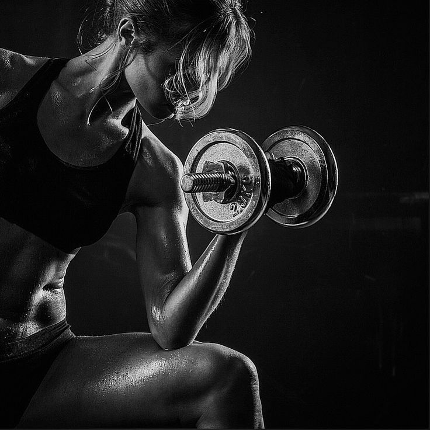

A Prime Gym é uma empresa fundada em 2019, criada com o objetivo de facilitar o acesso a produtos fitness de qualidade por meio de uma plataforma digital. A empresa surgiu com a proposta de atender pessoas que buscam praticidade, saúde e melhor desempenho físico. Desde sua criação, a Prime Gym vem evoluindo constantemente, ampliando seu catálogo de produtos e acompanhando as tendências do mercado fitness. A empresa foi idealizada com base na crescente busca por um estilo de vida saudável, oferecendo soluções acessíveis e eficientes para diferentes perfis de clientes

A empresa disponibiliza uma ampla variedade de produtos voltados ao segmento fitness, organizados em diferentes categorias:
Oferecer produtos fitness de qualidade por meio de uma plataforma digital eficiente, incentivando a prática de atividades físicas e contribuindo para a melhoria da saúde e do bem-estar dos clientes.
Consolidar-se como uma referência no comércio eletrônico de produtos fitness, ampliando continuamente sua presença no mercado e oferecendo cada vez mais variedade, qualidade e inovação.
A Prime Gym atende um público diversificado, que inclui iniciantes, praticantes intermediários e avançados de atividades físicas. Seus produtos são voltados tanto para pessoas que frequentam academias quanto para aquelas que realizam treinos em casa.
A Prime Gym se destaca por oferecer uma experiência completa ao cliente, baseada em qualidade, variedade de produtos, facilidade de navegação e atendimento eficiente.